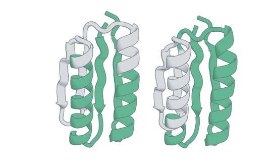
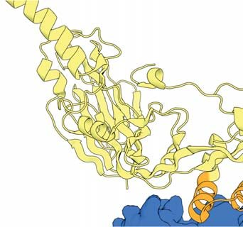
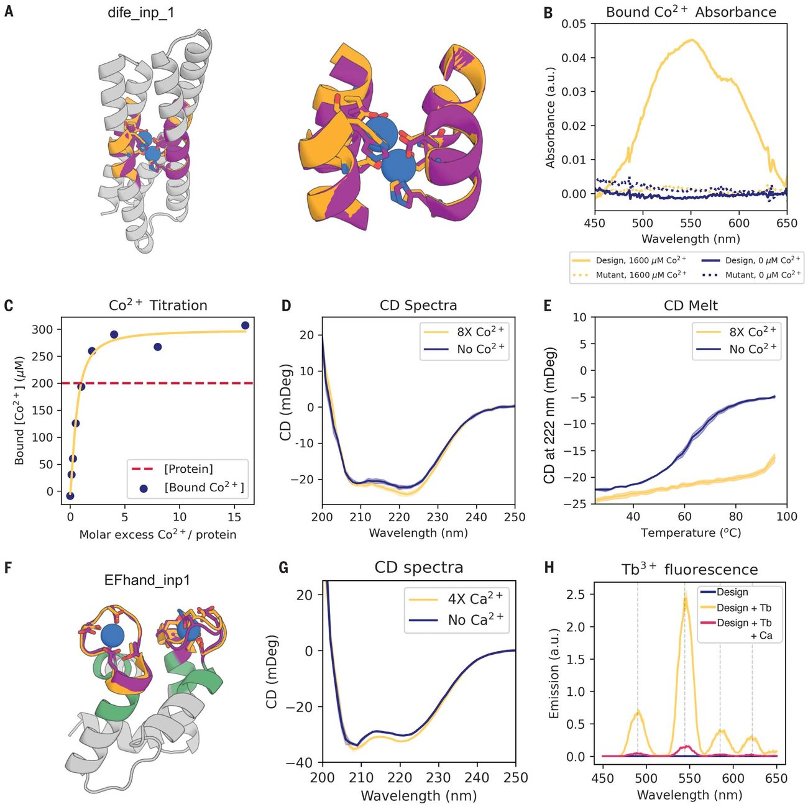
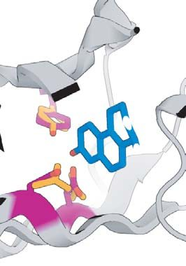

Scaffolding protein functional sites using deep learning
Abstract
The binding and catalytic functions of proteins are generally mediated by a small number of functional residues held in place by the overall protein structure. Here, we describe deep learning approaches for scaffolding such functional sites without needing to prespecify the fold or secondary structure of the scaffold. The first approach, "constrained hallucination," optimizes sequences such that their predicted structures contain the desired functional site. The second approach, "inpainting," starts from the functional site and fills in additional sequence and structure to create a viable protein scaffold in a single forward pass through a specifically trained RoseTTAFold network. We use these two methods to design candidate immunogens, receptor traps, metalloproteins, enzymes, and protein-binding proteins and validate the designs using a combination of in silico and experimental tests.
Introduction
T he biochemical functions of proteins are often carried out by a subset of residues that constitute a functional site-for example, an enzyme active site or a protein or small-molecule binding site-and hence the design of proteins with new functions can be divided into two steps. The first step is to identify functional site geometries and amino acid identities that produce the desired activity-for enzymes, this can be done using quantum chemistry calculations (1-3), and for protein binders, by fragment docking calculations (4,5). Alternatively, functional sites can be extracted from a native protein having the desired activity (6,7). Here, we focus on the second step: Given a functional site description from any source, design an amino acid sequence that folds up to a three-dimensional (3D) structure containing the site. Previous methods can scaffold functional sites made up of one or two contiguous chain segments (6-10), but, with the exception of helical bundles (8), these do not extend readily to more complex sites composed of three or more chain segments, and the generated backbones are not guaranteed to be designable (i.e., encodable by some amino acid sequence).
An ideal method for functional de novo protein design would (i) embed the functional site with minimal distortion in a designable scaffold protein; (ii) be applicable to arbitrary site geometries, searching over all possible scaffold topologies and secondary structure compositions for those optimal for harboring the specified site; and (iii) jointly generate backbone structure and amino acid sequence. We previously demonstrated that the trRosetta structure-prediction neural network (11) can be used to generate new proteins by maximizing the trRosetta output probability that a sequence folds to some (unspecified) 3D structure during Monte Carlo sampling in sequence space (12). We refer to this process as "hallucination," as it produces solutions that the network considers to be ideal proteins but that do not correspond to any known natural protein; crystal and nuclear magnetic resonance structures confirm that the hallucinated sequences fold to the hallucinated structures (12). trRosetta can also be used to design sequences that fold into a target backbone structure by carrying out sequence optimization using a structure recapitulation loss function that rewards similarity of the predicted structure to the target structure (13). Given this ability to design both sequence and structure, we reasoned that trRosetta could be adapted to tackle the functional site scaffolding problem.
Results
Partially constrained hallucination using a multiobjective loss function
To extend existing trRosetta-based design methods to scaffold functional sites (Fig. 1A), we optimized amino acid sequences for folding to a structure containing the desired functional site using a composite loss function that combines the previously used hallucination loss with a motif reconstruction loss over the functional motif [rather than the entire structure, as in (13)] (Fig. 1B; see materials and methods in the supplementary materials). Although we succeeded in generating structures with segments closely recapitulating functional sites, Rosetta structure predictions suggested that the sequences poorly encoded the structures (fig. S1A), and hence we used Rosetta design calculations to generate more-optimal sequences (14). Several designs targeting programmed cell death ligand 1 (PD-L1) generated by constrained hallucination with binding motifs derived from programmed cell death protein 1 (PD-1) (table S1) (15), followed by Rosetta design, were found to have binding affinities in the mid-nanomolar range (fig. S1, B to E). Although this experimental validation is encouraging, the requirement for sequence design using Rosetta is inconsistent with the aim of jointly designing sequence and structure.

Following the development of RoseTTAFold (RF) (16), we found that it performed better than trRosetta in guiding protein design by functional site-constrained hallucination (fig. S1G), likely reflecting the better overall modeling of protein sequence-structure relationships (16). Constrained hallucination with RoseTTAFold has the further advantages that, because 3D coordinates are explicitly modeled (trRosetta only generates inter-residue distances and orientations), site recapitulation can be assessed at the coordinate level and additional problem-specific loss terms can be implemented in coordinate space that assess inter-actions with a target (fig. S2; materials and methods).
Generalized functional motif scaffolding by missing information recovery
While powerful and general, the constrained hallucination approach is compute-intensive, as a forward and backward pass through the network is required for each gradient descent step during sequence optimization. In the training of recent versions of RoseTTAFold, a subset of positions in the input multiple sequence alignment are masked, and the network is trained to recover this missing sequence information in addition to predicting structure. This ability to recover both sequence and structural information provides a second solution to the functional site scaffolding problem: Given a functional site description, a forward pass through the network can be used to complete, or "inpaint," both protein sequence and structure in a masked region of protein (Fig. 1C; materials and methods). Here, the design challenge is formulated as an information recovery problem, analogous to the completion of a sentence given its first few words using language models (17) or the completion of corrupted images using inpainting (18). A wide variety of protein structure prediction and design challenges can be similarly formulated as missing information recovery problems (Fig. 1D). Although protein inpainting has been explored before (19,20), in this study we approach it using the power of a pretrained structure-prediction network.
We began from a RoseTTAFold (RF) model trained for structure prediction (16) and carried out further training on fixed-backbone sequence design in addition to the standard fixed-sequence structure prediction task to avoid model degradation (fig. S3; materials and methods). This model, denoted RF implicit , was able to recover small, contiguous regions missing both sequence and structure (fig. S3). Encouraged by this result, we trained a model explicitly on inpainting segments with missing sequence and structure given the surrounding protein context, in addition to sequence design and structure prediction tasks (fig. S4A; materials and methods and algorithm S1). The resulting model was able to inpaint missing regions with high fidelity (Fig. 1E and fig. S4) and performed well at sequence design (32% native sequence recovery during training) and structure prediction (fig. S4C). We call this network RF joint and use it to generate all inpainted designs below unless otherwise noted.
To evaluate in silico the quality of designs generated by our methods, we use the AlphaFold (AF) protein structure prediction network (21), which has high accuracy on de novo designed proteins (22) (fig. S7A). RF and AF have different architectures and were trained independently, and hence AF predictions can be regarded as a partially orthogonal in silico test of whether RF-designed sequences fold into the intended structures, analogous to traditional ab initio folding (13,23). We used AF to compare the ability of hallucination and Protein-Protein inter-actions A B MCMC or gradient update Loss function -Hallucination -Motif -Problem-specific Sequence Predicted Structure Final Design Desired Motif C Partial Sequence Partial Structure Completed Structure Completed Sequence D Partial information Design task Loop design Sequence design Structure prediction Functional site design 2KL8 Inpaints E F G Method 1: Hallucination Method 2: Inpainting Neural network RF joint L8 Inpaints p F G inpainting to rebuild missing protein regions (Fig. 1, F and G, and fig. S5). Inpainting yielded solutions with more accurately predicted fixed regions ("AF-RMSD"; Fig. 1G and fig. S5B) and structures overall more confidently predicted from their amino acid sequences ("AF pLDDT"; Fig. 1F and fig. S5A) and required only 1 to 10 s per design on an NVIDIA RTX 2080 graphics processing unit (hallucination requires 5 to 20 min per design). However, hallucination gave better results when the missing region was large (fig. S5) and generated greater structural diversity (fig. S8; and see below).
Designing immunogen candidates and receptor traps
In the following sections, we highlight the power of the constrained hallucination and inpainting methods by designing proteins containing a wide range of functional motifs (Figs. 2 to 5 and table S1). For almost all problems, we obtained designs that are closely recapitulated by AF with overall and motif (functional site) root mean square deviation (RMSD) of typically <2 and <1 Å, respectively, with high model confidence [predicted local distance difference test (pLDDT) > 80; table S2]; such recapitulation suggests that the designed sequences encode the designed structures [although it should be noted that AF has limited ability to predict protein stability (24) or mutational effects (25, 26)]. More critically, we assessed the activities of the designs experimentally (with the exception of those labeled "in silico" in Figs. 2 to 5).

The goal of immunogen design is to scaffold a native epitope recognized by a neutralizing antibody as accurately as possible in order to elicit antibodies binding the native protein upon immunization. Additional inter-actions with the antibody are undesirable because the aim is to elicit antibodies recognizing only the original antigen, and hence for hallucination, we add a repulsive loss term to penalize inter-actions with the antibody beyond those present in the scaffolded epitope (fig. S2; supplementary text). As a test case, we focused on respiratory syncytial virus F protein (RSV-F), which has several antigenic epitopes for which structures with neutralizing antibodies have been determined (7,9,10). We scaffolded RSV-F site II, a 24-residue helix-loop-helix motif that had previously been grafted successfully onto a three-helix bundle (7), as well as RSV-F site V, a 19-residue helix-loop-strand motif that has not yet been scaffolded successfully (27). We were able to hallucinate designs recapitulating both epitopes to sub-angstrom backbone RMSD in a variety of folds [Fig. 2A and fig. S9; structures and sequences for all designs below are given in data S1 and S2 and differ considerably from native proteins (table S2); RF hallucinated models and AF structure predictions are shown in figs. S9, S11, and S17; only the AF model is shown in the main figures]. Inpainting also generated scaffolds for RSV-F site V, with comparable quality but less diversity than the hallucinations (fig. S8).
We expressed 37 hallucinated RSV-F site V scaffolds with high AF pLDDT and low motif AF-RMSD in Escherichia coli and found that three bound the neutralizing antibody hRSV90 (27) with a dissociation constant (K d ) of 0.9 to 1.3 mM (Fig. 2C and fig. S11; materials and methods and supplementary text). The K d for the RSVF trimer is lower (23 nM), but the interface is larger, encompassing both sites II and V (27). Mutation of either of two key epitope residues reduced or abolished binding of the designs, suggesting that they bind the target through the scaffolded motif (Fig. 2C and fig. S11A), and circular dichroism (CD) spectra were consistent with the designed scaffold structures for both the original hallucinations (Fig. 2D) and the epitope mutants (fig. S11C). Four of the inpainted designs bound hRSV90 by yeast display but were poorly expressed in E. coli Comparisons of the RF hallucinated models to AF2 structure predictions from the design sequence are in fig. S9; here, because of space constraints, we show only the AF2 model (the two are very close in all cases). Here and in the following figures, we assess the extent of success in designing sequences that fold to structures harboring the desired motif through two metrics computed on the AF2 predictions: prediction confidence (AF pLDDT) and the accuracy of recapitulation of the original scaffolded motif (motif AF-RMSD). For RSV-F designs, these metrics are rsvf_ii_141 (85.0, 0.53 Å), rsvf_ii_158 (82.9, 0.51 Å), rsvf_ii_171 (88.4, 0.69 Å), rsvfv_hal_1 (82, 0.7 Å), rsvfv_hal_2 (88, 0.64 Å), and rsvfv_hal_3 (86, 0.65 Å). (B) Design of COVID-19 receptor trap based on ACE2 interface helix (PDB ID 6VW1 chain A residues 24 to 42). Design metrics: ace2_76 (89.1, 0.55 Å), ace2_1157 (80.4, 0.47 Å), and ace2_1007 (83.3, 0.57 Å). Colors: native protein scaffold, light yellow; native functional motif, orange; hallucinated scaffold, gray; hallucinated motif, purple; and binding partner, blue. See table S2 for additional metrics on each design. (C) Normalized maximum surface plasmon resonance signal (response units) of purified RSV-F epitope scaffolds and point mutants at various concentrations of hRSV90 antibody, with sigmoid fits. RSV-F refers to purified trimeric native F protein. K d values are as follows: RSV-F: 24 nM; rsvfv_hal_1: 0.9 mM; rsvfv_hal_2: 1.0 mM; rsvfv_hal_3: 1.3 mM. (D) Mean residue ellipticity (MRE) versus wavelength, from CD spectroscopy, for the three RSV-F site V hallucinations with binding activity.
Overall, the designs provide a diverse set of promising starting points for further RSV-F epitope-based vaccine development. We next applied hallucination to the in silico design of receptor traps that neutralize viruses by mimicking their natural binding targets and thus are inherently robust against mutational escape. We again augmented the loss function with a penalty on inter-actions beyond those in the native receptor to avoid opportunities for viral escape. As a test case, we scaffolded the helix of human angiotensin-converting enzyme 2 (hACE2) interacting with the receptor binding domain of severe acute respiratory syndrome coronavirus 2 (SARS-CoV-2) spike protein (28). The hallucinated hACE2 mimetics have a diverse set of helical topologies, and AF structure predictions recapitulate the binding inter-face with sub-angstrom accuracy (Fig. 2B and fig. S9C).
Designing metal-coordinating proteins
Di-iron sites are important in biological systems for iron storage ( 29 ) and can mediate catalysis ( 30 , 31 ). We were able to recapitulate the di-iron site from E. coli bacterioferritin, composed of four parallel helical segments, to sub-angstrom AF-RMSD using both inpainting (Fig. 3, A to E, and fig. S13) and hallucination (fig. S12; the hallucinations were not tested owing to buried polar residues; supplementary text). The designs had diverse helix connectivities and low structural similarity to the parent [figs. S13B and S12; template modeling (TM) – score 0.55 to 0.71 to PDB ID 1BCF_A]. We chose96inpainteddesignstotestexperimentally and found that 76 had soluble expression, at least eight (see supplementary text) had a spectroscopic shift indicative of Co 2+ binding (a proxy for iron binding) ( 32 , 33 ), and three (dife_inp_1, dife_inp_2, and dife_inp_3; Fig. 3B and fig. S13E) had CD spectra consistent with the designed fold (Fig. 3D and fig. S13F) and were stabilized by metal binding (Fig. 3E and fig. S13G). Mutation of the metal binding residues abolished binding (Fig. 3B and fig. S13E), and titration analysis of dife_inp_1 suggested that both metal binding sites were successfully scaffolded (Fig. 3C).

We next scaffolded the calcium-binding EF-hand motif (34), a 12-residue loop flanked by helices. Both constrained hallucination and inpainting readily generated scaffolds recapitulating either one or two EF-hand motifs to within 1.0 Å AF-RMSD of the native motif (Fig. 3F; fig. S14, A and B; and table S2). We chose 20 hallucinations and 55 inpaints to display on yeast and screen for calcium binding using tryptophan-enhanced terbium fluorescence (35). Six hallucinations and four inpaintings had fluorescence consistent with ion binding [fig. S14A; materials and methods; one of these proteins (EFhand_inp_2) was designed using RF implicit (supplementary text)]. The top hit from yeast, the inpainted EFhand_ inp_1, purified from E. coli as a monomer (fig. S14C), had the expected CD spectrum (Fig. 3G) and a clear terbium binding signal (Fig. 3H) that was eliminated by CaCl 2 competition (Fig. 3H).
Designing protein-binding proteins
To design binders to the cancer checkpoint protein PD-L1, we scaffolded two discontiguous segments of the interfacial b sheet from a high-affinity mutant of PD-1 (Fig. 5A; materials and methods) (15). Inpainting yielded designs with not only good AF predictions of the binder monomer (AF pLDDT > 80, motif AF-RMSD < 1.4 Å) but also of the complex between the binder and PD-L1, with an interchain predicted alignment error (inter-PAE) of <10 Å (materials and methods). In contrast to our initial efforts with trRosetta hallucination (fig. S1; supplementary text), it was not necessary to redesign the inpainted sequences using Rosetta. Of 31 designs selected for experimental testing, one design, pdl1_inp_1, bound PD-L1 with a K d of 326 nM (Fig. 5, B and C), worse than high-affinity consensus (HAC) PD-1 (K d = 110 pM) (37) but better than wild-type PD-1 (K d = 3.9 mM) (37). The pdl1_inp_1 design expressed as a monomer (fig. S15E), was thermostable, and had a CD spectrum consistent with that of a mixed a-b fold (fig. S15F). Unlike native PD-1, which has an immunoglobulin family b-sandwich fold, pdl1_inp_1 has two helices buttressing the interfacial b sheet, as well as an additional fifth inpainted strand extending the interface (fig. S15, A and B). The closest Protein Data Bank (PDB) (38) hit had a TM-score of 0.61, and the closest Basic Local Alignment Search Tool (BLAST) NR hit had a sequence identity of 25.4%.
We next used our methods to design ligands engaging multiple receptor binding sites. The nerve growth factor (NGF) receptor TrkA dimerizes upon ligand binding (39), and starting from the TrkA-NGF crystal structure, we positioned helical segments derived from two copies of a previously designed TrkA binding protein (4) and used hallucination followed by inpainting (materials and methods) to scaffold them on a single chain (Fig. 5, D and E). A design predicted to be well structured (AF pLDDT > 80) and interact with TrkA (inter-PAE < 10 Å) was expressed, purified, and found to bind TrkA, as assessed by biolayer interferometry (BLI) (Fig. 5F). A double mutant that knocked out both designed binding sites abolished TrkA binding, whereas single mutants knocking out either one of the binding sites maintained partial binding (Fig. 5F and fig. S16), suggesting that the protein binds two molecules of TrkA, as designed.
RoseTTAFold is able to predict the structures of protein complexes (40), and we hypothesized that it could generate additional binding inter-actions between hallucinated or inpainted binder and a target beyond the scaffolded motif. We used a "two-chain" hallucination protocol (fig. S17; materials and methods) to design binders to the Mdm2 oncogene by scaffolding the native N-terminal helix of the tumor suppressor protein p53 and obtained diverse designs with AF inter-PAE < 7 Å, target-aligned binder RMSD < 5 Å, binder pLDDT > 85, and spatial aggregation propensity (SAP) score < 35 (fig. S17, D and E); three examples are shown in Fig. 5G.
The above approaches to protein-binder design require starting from a previously known binding motif, but hallucination should in principle be able to generate de novo interfaces as well. To test this, we used two-chain hallucination to optimize 12-residue peptides for binding to 12 targets starting from random sequences, minimizing an interchain entropy loss (fig. S17H). Most of the hallucinated peptides bound at native protein interaction sites (fig. S18A); the remainder bound in hydrophobic grooves resembling protein binding sites (fig. S18B). We used the same procedure to generate 55-to 80-residue binders against TrkA and PDL-1 without starting motif information and obtained designs predicted by AF to complex with the target, at the native ligand binding site, with a target-aligned binder RMSD < 5 Å and an inter-PAE < 10 Å (fig. S17, F and G).
In silico design of enzyme active sites
We next sought to scaffold the active site of carbonic anhydrase II, which catalyzes the interconversion of carbon dioxide and bicarbonate and has recently been of interest for carbon sequestration (31)(32)(33). The active site consists of three Zn 2+ -coordinating histidines on two strands and a threonine on a loop, which orients the CO 2 (table S1). Despite the complexity of the irregular, discontinuous three-segment site, hallucination was able to generate designs with sub-angstrom motif AF-RMSDs with correct His placement for Zn 2+ coordination (Fig. 4A and fig. S9D); these are less than 100 residues in size, considerably smaller than the 261-residue native protein.

We next scaffolded the catalytic side chains of D 5 -3-ketosteroid isomerase (KSI) (table S1) involved in steroid hormone biosynthesis (36). We attempted to use gradient descent by backpropagation through AF (materials and methods; a side chain-predicting version of RF was not available at the time) but found it difficult to obtain accurate side-chain placement; the landscape may be too rugged with the high-resolution side chain-based loss (supplementary text). Better results were obtained with a two-stage approach using, first, both AF and trRosetta (to smoothen the loss landscape) and a description of the active site at the backbone level, followed by a second all-atom AFonly stage once the overall backbone was roughly in place. This yielded multiple plausible solutions with nearly exact matches to the catalytic side-chain geometry (Fig. 4, C and D, and fig. S9E). In silico validation with a heldout AF model (materials and methods) recapitulated the designed active sites. The use of stage-specific loss functions illustrates the ready customizability of the hallucination approach to specific design challenges without network retraining.
Unlike classical protein design pipelines, which treat backbone generation and sequence design as two separate problems, our methods simultaneously generate both sequence and structure, taking advantage of the ability of RoseTTAFold to reason over and jointly optimize both data types. This results in excellent performance in both generating protein backbones with a geometry capable of hosting a desired site and sequences that strongly encode these backbones. Our hallucinated and inpainted backbones accommodate all of the tested functional sites much more accurately than any naturally occurring protein in the PDB or AF predictions database (fig. S20 and table S3; supplementary text) (41), and our designed structures are predicted more confidently from their (single) sequences than most native proteins with known crystal structures and are on par with structurally validated de novo designed proteins (fig. S7, A and B). The hallucination and inpainting approaches are complementary: Hallucination can generate diverse scaffolds for minimalist functional sites but is computationally expensive because it requires a forward and backward pass through the neural network to calculate gradients for each optimization step (materials and methods), whereas inpainting usually requires larger input motifs but is much less compute-intensive and outperforms the hallucination method when more starting information is provided. This difference in performance can be understood by considering the manifold in sequence-structure space corresponding to folded proteins. The inpainting approach can be viewed as projecting an incomplete input sequence-structure pair onto the subset of the manifold of folded proteins (as represented by RoseTTAFold) containing the functional siteif insufficient starting information is provided, this projection is not well determined, but with sufficient information, it produces protein-like solutions, updating sequence and structure information simultaneously. The loss function used in the hallucination approach is constructed with the goal that minima lie in the protein manifold, but there will likely not be a perfect correspondence, and hence stochastic optimization of the loss function in sequence space may not produce solutions that are as protein-like as those from the inpainting approach.
Conclusion
The approaches for scaffolding functional sites presented here require no inputs other than the structure and sequence of the desired functional site and, unlike previous methods, do not require specifying the secondary structure or topology of the scaffold and can simultaneously generate both sequence and structure. Despite a recent surge of interest in using machine learning to design protein sequences (42)(43)(44)(45)(46)(47)(48)(49), the design of protein structure is relatively underexplored, likely because of the difficulty of efficiently representing and learning structure (50). Generative adversarial networks and variational autoencoders have been used to generate protein backbones for specific fold families (51)(52)(53), whereas our approach leverages the training of RoseTTAFold on the entire PDB to generate an almost unlimited diversity of new structures and enable the scaffolding of any desired constellation of functional residues. Our "activation maximization" hallucination approach extends related work in this area (54-56) by leveraging its key strength, the ability to use arbitrary loss functions tailored to specific problems and design any length sequence without retraining. The ability of our inpainting approach to expand from a given functional site to generate a coherent sequence-structure pair should find wide application in protein design because of its speed and generality. The two approaches individually, and the combination of the two, should increase in power as more-accurate protein structure, interface, and small-molecule binding prediction networks are developed.
Jue WangSidney LisanzaDavid JuergensDoug TischerJoseph L. WatsonKarla M. CastroRobert RagotteAmijai SaragoviLukas F. MillesMinkyung BaekIvan AnishchenkoWei YangDerrick R. HicksMarc ExpòsitThomas SchlichthaerleJung-Ho ChunJustas DauparasNathaniel BennettBasile I. M. WickyAndrew MuenksFrank DiMaioBruno CorreiaSergey OvchinnikovDavid Baker
Protein design has had success in finding sequences that fold into a desired conformation, but designing functional proteins remains challenging. Wang et al . describe two deep-learning methods to design proteins that contain prespecified functional sites. In the first, they found sequences predicted to fold into stable structures that contain the functional site. In the second, they retrained a structure prediction network to recover the sequence and full structure of a protein given only the functional site. The authors demonstrate their methods by designing proteins containing a variety of functional motifs. —VV
References
- D. Röthlisberger et al ., Nature 453 , 190 – 195 (2008)
- J. B. Siegel et al ., Science 319 , 1387 – 1391 (2008)
- J. B. Siegel et al ., Science 329 , 309 – 313 (2010)
- L. Cao et al ., Nature 605 , 551 – 560 (2022)
- A. Chevalier et al ., Nature 550 , 74 – 79 (2017)
- E. Procko et al ., Cell 157 , 1644 – 1656 (2014)
- B. E. Correia et al ., Nature 507 , 201 – 206 (2014)
- Röthlisberger D. Nature 2008
- Sesterhenn F. Science 2020
- Yang C. Nat. Chem. Biol 2021
- Yang J. Proc. Natl. Acad. Sci. U.S.A 2020
- Anishchenko I. Nature 2021
- Norn C. Proc. Natl. Acad. Sci. U.S.A 2021
- Tischer D. bioRxiv 2020. doi:10.1101/2020.11.29.402743
- Pascolutti R. Structure 2016
- Devlin J, Chang M, Lee K, Toutanova K. 2019
- Li Z, Nguyen S, Xu D, Shang Y. 2017
- R. A. Yeh et al ., arXiv:1607.07539 [cs.CV] (2017)
- Z. Li, S. P. Nguyen, D. Xu, Y. Shang, Proc. Int. Conf. Tools. Artif. Intell. 29 , 1085 – 1091 (2017)
- N. Anand, P. Huang, in Advances in Neural Information Processing Systems 31 , S. Bengio et al ., Eds. (Curran Associates, Inc., 2018), pp. 7494 – 7505. 21. J. Jumper et al ., Nature 596 , 583 – 589 (2021)
- Chowdhury R. 2021. doi:10.1101/2021.08.02.454840
- Simons K, Bonneau R, Ruczinski I, Baker D. Proteins 1999
- Kim T. 2021. doi:10.1101/2021.12.17.472837
- Pak M. 2021. doi:10.1101/2021.09.19.460937
- Buel G, Walters K. Nat. Struct. Mol. Biol 2022
- Mousa J, Kose N, Matta P, Gilchuk P, Crowe J. Nat. Microbiol 2017
- Frolow F, Kalb A, Yariv J. Nat. Struct. Biol 1994
- Lombardi A, Pirro F, Maglio O, Chino M, Degrado W. Acc. Chem. Res 2019
- A. Lombardi, F. Pirro, O. Maglio, M. Chino, W. F. DeGrado, Acc. Chem. Res. 52 , 1148 – 1159 (2019)
- Calhoun J. Biopolymers 2005
- Keech A. J. Biol. Chem 1997
- Marsh E, Degrado W. Proc. Natl. Acad. Sci. U.S.A 2002
- Yáñez M, Gil-Longo J, Campos-Toimil M. 2012
- Caldwell S. Proc. Natl. Acad. Sci. U.S.A 2020
- Cho H. J. Biol. Chem 1999
- Maute R. Proc. Natl. Acad. Sci. U.S.A 2015
- Berman H. Nucleic Acids Res 2000
- Wiesmann C, Ultsch M, Bass S, De Vos A. Nature 1999
- Humphreys I. Science 2021
- Tunyasuvunakool K. Nature 2021
- Ingraham J, Garg V, Barzilay R, Jaakkola T. Generative models for graph-based protein design. 2019
- Strokach A, Becerra D, Corbi-Verge C, Perez-Riba A, Kim P. Cell Syst 2020
- Biswas S, Khimulya G, Alley E, Esvelt K, Church G. Nat. Methods 2021
- Repecka D. Nat. Mach. Intell 2021
- J.-E. Shin et al ., Nat. Commun. 12 , 2403 (2021)
- Wu Z, Johnston K, Arnold F, Yang K. Curr. Opin. Chem. Biol 2021
- Anand N. Nat. Commun 2022
- Madani A. 2021. doi:10.1101/2021.07.18.452833
- Ovchinnikov S, Huang P. Curr. Opin. Chem. Biol 2021
- Anand N, Eguchi R, Huang P. Fully differentiable full-atom protein backbone generation. 2019
- Eguchi R, Choe C, Huang P. PLOS Comput. Biol 2022
- Lin Z, Sercu T, Lecun Y, Rives A. Deep generative models create new and diverse protein structures. 2021
- Jendrusch M, Korbel J, Sadiq S. 2021. doi:10.1101/2021.10.11.463937
- Moffat L, Greener J, Jones D. 2021. doi:10.1101/2021.08.24.457549
- Moffat L, Kandathil S, Jones D. 2022. doi:10.1101/2022.01.27.478087
- Li L. J. Phys. Chem. C 2008
- Wang J. 2022. doi:10.5281/zenodo.6673001